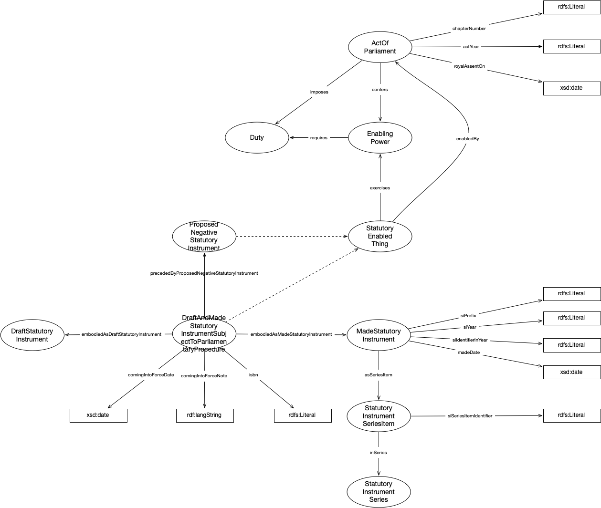

IRI: http://parliament.uk/ontologies/legislation/ActOfParliament
IRI: http://parliament.uk/ontologies/legislation/DayCount
IRI: http://parliament.uk/ontologies/legislation/DayCountType
IRI: http://parliament.uk/ontologies/legislation/DraftAndMadeStatutoryInstrumentSubjectToParliamentaryProcedure
IRI: http://parliament.uk/ontologies/legislation/DraftStatutoryInstrument
IRI: http://parliament.uk/ontologies/legislation/EnablingPower
IRI: http://parliament.uk/ontologies/legislation/LayingDuty
IRI: http://parliament.uk/ontologies/legislation/MadeStatutoryInstrument
IRI: http://parliament.uk/ontologies/legislation/Procedure
IRI: http://parliament.uk/ontologies/legislation/ProposedNegativeStatutoryInstrument
IRI: http://parliament.uk/ontologies/legislation/StatutoryEnabledThing
IRI: http://parliament.uk/ontologies/legislation/StatutoryInstrumentSeries
IRI: http://parliament.uk/ontologies/legislation/StatutoryInstrumentSeriesItem
IRI: http://parliament.uk/ontologies/legislation/asSeriesItem
IRI: http://parliament.uk/ontologies/legislation/combines
IRI: http://parliament.uk/ontologies/legislation/delegates
IRI: http://parliament.uk/ontologies/legislation/embodiedAsDraftStatutoryInstrument
IRI: http://parliament.uk/ontologies/legislation/embodiedAsMadeStatutoryInstrument
IRI: http://parliament.uk/ontologies/legislation/enabledBy
IRI: http://parliament.uk/ontologies/legislation/hasDayType
IRI: http://parliament.uk/ontologies/legislation/imposesDayCountDuty
IRI: http://parliament.uk/ontologies/legislation/imposesLayingDuty
IRI: http://parliament.uk/ontologies/legislation/imposesProcedureDuty
IRI: http://parliament.uk/ontologies/legislation/inSeries
IRI: http://parliament.uk/ontologies/legislation/precededByProposedNegativeStatutoryInstrument
IRI: http://parliament.uk/ontologies/legislation/comingIntoForceDate
IRI: http://parliament.uk/ontologies/legislation/comingIntoForceNote
IRI: http://parliament.uk/ontologies/legislation/count
IRI: http://parliament.uk/ontologies/legislation/isbn
IRI: http://parliament.uk/ontologies/legislation/madeDate
IRI: http://parliament.uk/ontologies/legislation/siIdentiferInYear
IRI: http://parliament.uk/ontologies/legislation/siPrefix
IRI: http://parliament.uk/ontologies/legislation/siSeriesItemIdentifier
IRI: http://parliament.uk/ontologies/legislation/siYear
This HTML document was obtained by processing the OWL ontology source code through LODE, Live OWL Documentation Environment, developed by Silvio Peroni.